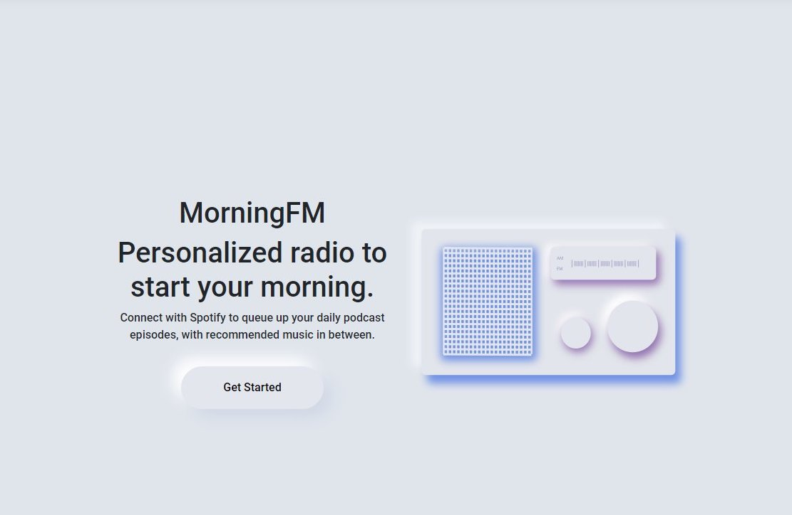
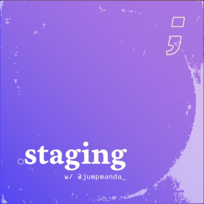

Amanda Hernandez
Full stack software engineer with expertise in frontend and CICD
Professionally building web apps for the past 2 years at Mitchell
Relentless passion for audio - concert going, playlist making, learning to DJ, self-taught podcasting
Projects
-

MorningFM
Webapp for users to create customized Spotify playlists with music and podcasts.
Users connect to their Spotify account and create their own playlist with episodes from their favorite podcast shows. MorningFM adds recommended songs in between podcast episodes to create a unique radio-like experience.
Show more Show less
On a hot August night in 2020, I decided to bring this idea I'd been sitting on for a few months to life. At the time, a Spotify user couldn't add a podcast episode to a playlist, but could queue it up. Taking a look at the Spotify API, it seemed possible to programmatically add episodes to playlists in order to create my own unique playlist.
Now that the app is able to create these playlists on demand, my next steps will be to add a scheduler so that I can achieve my main goal of automatically triggering my own playlist creation each morning as I drink my coffee :)- Built with React, .NET Core, MongoDB
- Deployed to Azure Container Instance as a staging environment.
DEVStagingPRODDeployment status of project. Filled colors have been deployed, and empty boxes are TBD. -

.staging podcast
For underrepresented devs and devs in the making, this podcast is focused on capturing the experiences of developers just like us: BIPOC/LGBTQ+.
More information on Anchor
About
Experience
-
Education
September 2016 - March 2019
Studied for B.S Informatics (Donald Bren School of Information & Computer Sciences) at UC Irvine
-
Internship, Mitchell
June 2018 - April 2019
Completed software engineering internship at Mitchell, with internship project focusing on Dockerizing a legacy application.
-
Software Development Engineer I, Mitchell
May 2019 - Present
- Building and maintaining webapps & .NET microservices on the Research & Development team
- Lead developer for core document microservice for Casualty Solutions Group's products
- Expertise in researching and demo-ing new technologies to fellow developers
Skills
- Javascript
- Typescript
- Knockout.js
- React
- C#
- Docker - Docker Certified Associate
- AWS - AWS Cloud Practitioner